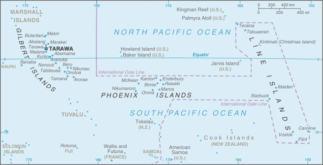
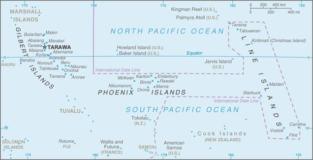

-
Introduction :: Kiribati
-
Background:The Gilbert Islands became a British protectorate in 1892 and a colony in 1915; they were captured by the Japanese in the Pacific War in 1941. The islands of Makin and Tarawa were the sites of major US amphibious victories over entrenched Japanese garrisons in 1943. The Gilbert Islands were granted self-rule by the UK in 1971 and complete independence in 1979 under the new name of Kiribati. The US relinquished all claims to the sparsely inhabited Phoenix and Line Island groups in a 1979 treaty of friendship with Kiribati. Kiribati joined the UN in 1999 and has been an active participant in international efforts to combat climate change.
-
Geography :: Kiribati
-
Location:Oceania, group of 33 coral atolls in the Pacific Ocean, straddling the Equator; the capital Tarawa is about halfway between Hawaii and AustraliaGeographic coordinates:1 25 N, 173 00 EMap references:OceaniaArea:total: 811 sq kmland: 811 sq kmwater: 0 sq km
note: includes three island groups - Gilbert Islands, Line Islands, and Phoenix Islands - dispersed over about 3.5 million sq km (1.35 million sq mi)
country comparison to the world: 187Area - comparative:four times the size of Washington, DCLand boundaries:0 kmCoastline:1,143 kmMaritime claims:territorial sea: 12 nmexclusive economic zone: 200 nmClimate:tropical; marine, hot and humid, moderated by trade windsTerrain:mostly low-lying coral atolls surrounded by extensive reefsElevation:mean elevation: 2 melevation extremes: 0 m lowest point: Pacific Ocean81 highest point: unnamed elevation on BanabaNatural resources:phosphate (production discontinued in 1979), coconuts (copra), fishLand use:agricultural land: 42% (2011 est.)arable land: 2.5% (2011 est.) / permanent crops: 39.5% (2011 est.) / permanent pasture: 0% (2011 est.)forest: 15% (2011 est.)other: 43% (2011 est.)Irrigated land:0 sq km (2012)Population distribution:consists of three achipelagos spread out over an area roughly the size of India; the eastern Line Islands and central Phoenix Islands are sparsely populated, but the western Gilbert Islands are some of the most densely settled places on earth, with the main island of South Tarawa boasting a population density similar to Tokyo or Hong KongNatural hazards:typhoons can occur any time, but usually November to March; occasional tornadoes; low level of some of the islands make them sensitive to changes in sea levelEnvironment - current issues:heavy pollution in lagoon of south Tarawa atoll due to overcrowding mixed with traditional practices such as lagoon latrines and open-pit dumping; ground water at risk; potential for water shortages, disease; coastal erosionEnvironment - international agreements:party to: Biodiversity, Climate Change, Climate Change-Kyoto Protocol, Desertification, Hazardous Wastes, Law of the Sea, Marine Dumping, Ozone Layer Protection, Whalingsigned, but not ratified: none of the selected agreementsGeography - note:21 of the 33 islands are inhabited; Banaba (Ocean Island) in Kiribati is one of the three great phosphate rock islands in the Pacific Ocean - the others are Makatea in French Polynesia, and Nauru; Kiribati is the only country in the world to fall into all four hemispheres (northern, southern, eastern, and western) -
People and Society :: Kiribati
-
Population:109,367 (July 2018 est.)country comparison to the world: 191Nationality:noun: I-Kiribati (singular and plural)adjective: I-KiribatiEthnic groups:I-Kiribati 96.2%, I-Kiribati/mixed 1.8%, Tuvaluan 0.2%, other 1.8% (2015 est.)Languages:I-Kiribati, English (official)Religions:Roman Catholic 57.3%, Kiribati Uniting Church 31.3%, Mormon 5.3%, Baha'i 2.1%, Seventh Day Adventist 1.9%, other 2.1% (2015 est.)Age structure:0-14 years: 29.27% (male 16,316 /female 15,693)15-24 years: 20.74% (male 11,213 /female 11,466)25-54 years: 39.43% (male 20,756 /female 22,363)55-64 years: 6.23% (male 3,071 /female 3,747)65 years and over: 4.34% (male 1,863 /female 2,879) (2018 est.)population pyramid:
 The World Factbook Field Image ModalAustralia - Oceania :: Kiribati Print
The World Factbook Field Image ModalAustralia - Oceania :: Kiribati Print Image DescriptionThis is the population pyramid for Kiribati. A population pyramid illustrates the age and sex structure of a country's population and may provide insights about political and social stability, as well as economic development. The population is distributed along the horizontal axis, with males shown on the left and females on the right. The male and female populations are broken down into 5-year age groups represented as horizontal bars along the vertical axis, with the youngest age groups at the bottom and the oldest at the top. The shape of the population pyramid gradually evolves over time based on fertility, mortality, and international migration trends.
Image DescriptionThis is the population pyramid for Kiribati. A population pyramid illustrates the age and sex structure of a country's population and may provide insights about political and social stability, as well as economic development. The population is distributed along the horizontal axis, with males shown on the left and females on the right. The male and female populations are broken down into 5-year age groups represented as horizontal bars along the vertical axis, with the youngest age groups at the bottom and the oldest at the top. The shape of the population pyramid gradually evolves over time based on fertility, mortality, and international migration trends.
For additional information, please see the entry for Population pyramid on the Definitions and Notes page under the References tab.Dependency ratios:total dependency ratio: 63 (2015 est.)youth dependency ratio: 57 (2015 est.)elderly dependency ratio: 6 (2015 est.)potential support ratio: 16.6 (2015 est.)Median age:total: 25 yearsmale: 24.1 yearsfemale: 25.8 years (2018 est.)country comparison to the world: 157Population growth rate:1.12% (2018 est.)country comparison to the world: 96Birth rate:21 births/1,000 population (2018 est.)country comparison to the world: 75Death rate:7 deaths/1,000 population (2018 est.)country comparison to the world: 129Net migration rate:-2.9 migrant(s)/1,000 population (2017 est.)country comparison to the world: 174Population distribution:consists of three achipelagos spread out over an area roughly the size of India; the eastern Line Islands and central Phoenix Islands are sparsely populated, but the western Gilbert Islands are some of the most densely settled places on earth, with the main island of South Tarawa boasting a population density similar to Tokyo or Hong KongUrbanization:urban population: 54.1% of total population (2018)rate of urbanization: 3.19% annual rate of change (2015-20 est.)Major urban areas - population:64,000 TARAWA (capital) (2018)Sex ratio:at birth: 1.05 male(s)/female (2017 est.)0-14 years: 1.04 male(s)/female (2017 est.)15-24 years: 0.99 male(s)/female (2017 est.)25-54 years: 0.93 male(s)/female (2017 est.)55-64 years: 0.82 male(s)/female (2017 est.)65 years and over: 0.65 male(s)/female (2017 est.)total population: 0.95 male(s)/female (2017 est.)Mother's mean age at first birth:23.1 years (2009 est.)note: median age at first birth among women 25-29
Maternal mortality rate:90 deaths/100,000 live births (2015 est.)country comparison to the world: 76Infant mortality rate:total: 31.1 deaths/1,000 live births (2018 est.)male: 32.3 deaths/1,000 live births (2018 est.)female: 29.9 deaths/1,000 live births (2018 est.)country comparison to the world: 58Life expectancy at birth:total population: 66.9 years (2018 est.)male: 64.3 years (2018 est.)female: 69.5 years (2018 est.)country comparison to the world: 174Total fertility rate:2.34 children born/woman (2018 est.)country comparison to the world: 86Contraceptive prevalence rate:22.3% (2009)Health expenditures:10.2% of GDP (2014)country comparison to the world: 24Physicians density:0.2 physicians/1,000 population (2013)Hospital bed density:1.9 beds/1,000 population (2015)Drinking water source:improved: urban: 87.3% of populationrural: 50.6% of populationtotal: 66.9% of populationunimproved: urban: 12.7% of populationrural: 49.4% of populationtotal: 33.1% of population (2015 est.)Sanitation facility access:improved: urban: 51.2% of population (2015 est.)rural: 30.6% of population (2015 est.)total: 39.7% of population (2015 est.)unimproved: urban: 48.8% of population (2015 est.)rural: 69.4% of population (2015 est.)total: 60.3% of population (2015 est.)HIV/AIDS - adult prevalence rate:NAHIV/AIDS - people living with HIV/AIDS:NAHIV/AIDS - deaths:NAObesity - adult prevalence rate:46% (2016)country comparison to the world: 9Children under the age of 5 years underweight:14.9% (2009)country comparison to the world: 43School life expectancy (primary to tertiary education):total: 12 years (2008)male: 11 years (2008)female: 12 years (2008)Unemployment, youth ages 15-24:total: 54% (2010 est.)male: 47.6% (2010 est.)female: 61.8% (2010 est.)country comparison to the world: 3 -
Government :: Kiribati
-
Country name:conventional long form: Republic of Kiribaticonventional short form: Kiribatilocal long form: Republic of Kiribatilocal short form: Kiribatiformer: Gilbert Islandsetymology: the name is the local pronunciation of "Gilberts," the former designation of the islands; originally named after explorer Thomas GILBERT, who mapped many of the islands in 1788
note: pronounced keer-ree-bahss
Government type:presidential republicCapital:name: Tarawageographic coordinates: 1 21 N, 173 02 Etime difference: UTC+12 (17 hours ahead of Washington, DC, during Standard Time)note: Kiribati has three time zones: the Gilbert Islands group at UTC+12, the Phoenix Islands at UTC+13, and the Line Islands at UTC+14
Administrative divisions:3 geographical units: Gilbert Islands, Line Islands, Phoenix Islands; note - there are no first-order administrative divisions, but there are 6 districts (Banaba, Central Gilberts, Line Islands, Northern Gilberts, Southern Gilberts, Tarawa) and 21 island councils - one for each of the inhabited islands (Abaiang, Abemama, Aranuka, Arorae, Banaba, Beru, Butaritari, Kanton, Kiritimati, Kuria, Maiana, Makin, Marakei, Nikunau, Nonouti, Onotoa, Tabiteuea, Tabuaeran, Tamana, Tarawa, Teraina)Independence:12 July 1979 (from the UK)National holiday:Independence Day, 12 July (1979)Constitution:history: The Gilbert and Ellice Islands Order in Council 1915, The Gilbert Islands Order in Council 1975 (preindependence); latest promulgated 12 July 1979 (at independence) (2017)amendments: proposed by the House of Assembly; passage requires two-thirds majority vote by the Assembly membership; passage of amendments affecting the constitutional section on amendment procedures and parts of the constitutional chapter on citizenship requires deferral of the proposal to the next Assembly meeting where approval is required by at least two-thirds majority vote of the Assembly membership and support of the nominated or elected Banaban member of the Assembly; amendments affecting the protection of fundamental rights and freedoms also requires approval by at least two-thirds majority in a referendum; amended 1995, 2013 (2017)Legal system:English common law supplemented by customary lawInternational law organization participation:has not submitted an ICJ jurisdiction declaration; non-party state to the ICCtCitizenship:citizenship by birth: nocitizenship by descent only: at least one parent must be a native-born citizen of Kiribatidual citizenship recognized: noresidency requirement for naturalization: 7 yearsSuffrage:18 years of age; universalJudicial branch:highest courts: High Court (consists of a chief justice and other judges as prescribed by the president); note - the High Court has jurisdiction on constitutional issuesjudge selection and term of office: chief justice appointed by the president on the advice of the cabinet in consultation with the Public Service Commission (PSC); other judges appointed by the president on the advice of the chief justice along with the PSCsubordinate courts: Court of Appeal; magistrates' courtsExecutive branch:chief of state: President Taneti MAAMAU (since 11 March 2016); Vice President Kourabi NENEM (since 17 March 2016); note - the president is both chief of state and head of governmenthead of government: President Taneti MAAMAU (since 11 March 2016); Vice President Kourabi NENEM (since 17 March 2016)cabinet: Cabinet appointed by the president from among House of Assembly memberselections/appointments: president directly elected by simple majority popular vote following nomination of candidates from among House of Assembly members; term is 4 years (eligible for 2 additional terms); election last held on 9 March 2016 (next to be held in 2020); vice president appointed by the presidentelection results: Taneti MAAMAU elected president; percent of vote - Taneti MAAMAU 60%, Rimeta BENIAMINA (BTK) 38.6%, Taneti IOANE (BTK) 1.4%Legislative branch:description: unicameral House of Assembly or Maneaba Ni Maungatabu (46 seats; 44 members directly elected in single- and multi-seat constituencies by absolute majority vote in two-rounds if needed; 1 member appointed by the Rabi Council of Leaders - representing Banaba Island, and 1 ex officio member - the attorney general; members serve 4-year terms)elections: legislative elections were held in two rounds - the first on 30 December 2015 and the second on 7 January 2016 (next to be held in 2019)election results: percent of vote by party - NA; seats by party - BTK 26, KTK and MKP 19, other 2 (includes attorney general); composition - men 43, women 3, percent of women 6.5%Political parties and leaders:Boutokaan Te Koaua Party or BTK or Pillars of Truth [Anote TONG]
Kamaeuraoan Te I-Kiribati Party or KTK [Tetaua TAITAI]
Maurin Kiribati Pati or MKP [Rimeta BENIAMINA]
Tobwaan Kiribati Party or TKP [Taneti MAAMAU]note: there is no tradition of formally organized political parties in Kiribati; they more closely resemble factions or interest groups because they have no party headquarters, formal platforms, or party structures
International organization participation:ABEDA, ACP, ADB, AOSIS, C, FAO, IBRD, ICAO, ICRM, IDA, IFAD, IFC, IFRCS, ILO, IMF, IMO, IOC, ITU, ITUC (NGOs), OPCW, PIF, Sparteca, SPC, UN, UNCTAD, UNESCO, UPU, WHO, WIPO, WMODiplomatic representation in the US:none; the Kiribati Permanent Mission to the UN serves as the Embassy; it is headed by Teburoro TITO (since 13 September 2017); address: 800 Second Avenue, Suite 400A, New York, NY 10017; telephone: [1](212)867-3310; FAX: [1](212)867-3320note: honorary consulate in Honolulu
Diplomatic representation from the US:the US does not have an embassy in Kiribati; the US Ambassador to Fiji is accredited to KiribatiFlag description:the upper half is red with a yellow frigatebird flying over a yellow rising sun, and the lower half is blue with three horizontal wavy white stripes to represent the Pacific ocean; the white stripes represent the three island groups - the Gilbert, Line, and Phoenix Islands; the 17 rays of the sun represent the 16 Gilbert Islands and Banaba (formerly Ocean Island); the frigatebird symbolizes authority and freedomNational symbol(s):frigatebird; national colors: red, white, blue, yellowNational anthem:name: "Teirake kaini Kiribati" (Stand Up, Kiribati)lyrics/music: Urium Tamuera IOTEBAnote: adopted 1979
-
Economy :: Kiribati
-
Economy - overview:
A remote country of 33 scattered coral atolls, Kiribati has few natural resources and is one of the least developed Pacific Island countries. Commercially viable phosphate deposits were exhausted by the time of independence from the United Kingdom in 1979. Earnings from fishing licenses and seafarer remittances are important sources of income. Although the number of seafarers employed declined due to changes in global shipping demands, remittances are expected to improve with more overseas temporary and seasonal work opportunities for Kiribati nationals.
Economic development is constrained by a shortage of skilled workers, weak infrastructure, and remoteness from international markets. The public sector dominates economic activity, with ongoing capital projects in infrastructure including road rehabilitation, water and sanitation projects, and renovations to the international airport, spurring some growth. Public debt increased from 23% of GDP at the end of 2015 to 25.8% in 2016.
Kiribati is dependent on foreign aid, which was estimated to have contributed over 32.7% in 2016 to the government’s finances. The country’s sovereign fund, the Revenue Equalization Reserve Fund (RERF), which is held offshore, had an estimated balance of $855.5 million in late July 2016. The RERF seeks to avoid exchange rate risk by holding investments in more than 20 currencies, including the Australian dollar, US dollar, the Japanese yen, and the Euro. Drawdowns from the RERF helped finance the government’s annual budget.
GDP (purchasing power parity):$227 million (2017 est.)$220.2 million (2016 est.)$217.7 million (2015 est.)note: data are in 2017 dollars
country comparison to the world: 219GDP (official exchange rate):$197 million (2017 est.) (2017 est.)GDP - real growth rate:3.1% (2017 est.)1.1% (2016 est.)10.3% (2015 est.)country comparison to the world: 108GDP - per capita (PPP):$2,000 (2017 est.)$2,000 (2016 est.)$2,000 (2015 est.)note: data are in 2017 dollars
country comparison to the world: 210GDP - composition, by sector of origin:agriculture: 23% (2016 est.)industry: 7% (2016 est.)services: 70% (2016 est.)Agriculture - products:copra, breadfruit, fishIndustries:fishing, handicraftsIndustrial production growth rate:1.1% (2012 est.)country comparison to the world: 153Labor force:39,000 (2010 est.)note: economically active, not including subsistence farmers
country comparison to the world: 198Labor force - by occupation:agriculture: 15%industry: 10%services: 75% (2010)Unemployment rate:30.6% (2010 est.)6.1% (2005)country comparison to the world: 209Population below poverty line:NABudget:revenues: 151.2 million (2017 est.)expenditures: 277.5 million (2017 est.)Taxes and other revenues:76.8% (of GDP) (2017 est.)country comparison to the world: 4Budget surplus (+) or deficit (-):-64.1% (of GDP) (2017 est.)country comparison to the world: 221Public debt:26.3% of GDP (2017 est.)22.9% of GDP (2016 est.)country comparison to the world: 172Fiscal year:NAInflation rate (consumer prices):0.4% (2017 est.)1.9% (2016 est.)country comparison to the world: 24Current account balance:$18 million (2017 est.)$35 million (2016 est.)country comparison to the world: 62Exports:$84.75 million (2013 est.)$62.31 million (2012 est.)country comparison to the world: 199Exports - partners:Philippines 50.8%, Malaysia 17.2%, US 11.4%, Bangladesh 5.8%, Fiji 5.4% (2017)Exports - commodities:fish, coconut productsImports:$107.1 million (2016 est.)$182.2 million (2013 est.)country comparison to the world: 214Imports - commodities:food, machinery and equipment, miscellaneous manufactured goods, fuelImports - partners:Australia 29.3%, Fiji 17.3%, NZ 10.7%, China 5.8%, US 5.8%, Singapore 5.1%, Japan 4.6%, Thailand 4.1% (2017)Reserves of foreign exchange and gold:$0 (31 December 2017 est.)$8.37 million (31 December 2010 est.)country comparison to the world: 192Debt - external:$40.9 million (2016 est.)$32.3 million (2015 est.)country comparison to the world: 196Stock of direct foreign investment - at home:NA
Exchange rates:Australian dollars (AUD) per US dollar -1.31 (2017 est.)1.34 (2016 est.)1.34 (2015 est.)1.33 (2014 est.)1.11 (2013 est.)note: the Australian dollar circulates as legal tender -
Energy :: Kiribati
-
Electricity access:population without electricity: 43,839 (2012)electrification - total population: 59% (2012)electrification - urban areas: 77% (2012)electrification - rural areas: 45% (2012)Electricity - production:29 million kWh (2016 est.)country comparison to the world: 210Electricity - consumption:26.97 million kWh (2016 est.)country comparison to the world: 210Electricity - exports:0 kWh (2016 est.)country comparison to the world: 153Electricity - imports:0 kWh (2016 est.)country comparison to the world: 164Electricity - installed generating capacity:11,000 kW (2016 est.)country comparison to the world: 209Electricity - from fossil fuels:73% of total installed capacity (2016 est.)country comparison to the world: 99Electricity - from nuclear fuels:0% of total installed capacity (2017 est.)country comparison to the world: 119Electricity - from hydroelectric plants:0% of total installed capacity (2017 est.)country comparison to the world: 181Electricity - from other renewable sources:27% of total installed capacity (2017 est.)country comparison to the world: 25Crude oil - production:0 bbl/day (2017 est.)country comparison to the world: 154Crude oil - exports:0 bbl/day (2015 est.)country comparison to the world: 146Crude oil - imports:0 bbl/day (2015 est.)country comparison to the world: 146Crude oil - proved reserves:0 bbl (1 January 2018 est.)country comparison to the world: 151Refined petroleum products - production:0 bbl/day (2015 est.)country comparison to the world: 160Refined petroleum products - consumption:400 bbl/day (2016 est.)country comparison to the world: 211Refined petroleum products - exports:0 bbl/day (2015 est.)country comparison to the world: 167Refined petroleum products - imports:420 bbl/day (2015 est.)country comparison to the world: 207Natural gas - production:0 cu m (2017 est.)country comparison to the world: 151Natural gas - consumption:0 cu m (2017 est.)country comparison to the world: 162Natural gas - exports:0 cu m (2017 est.)country comparison to the world: 129Natural gas - imports:0 cu m (2017 est.)country comparison to the world: 143Natural gas - proved reserves:0 cu m (1 January 2014 est.)country comparison to the world: 152Carbon dioxide emissions from consumption of energy:58,850 Mt (2017 est.)country comparison to the world: 209
-
Communications :: Kiribati
-
Telephones - fixed lines:total subscriptions: 765 (2017 est.)subscriptions per 100 inhabitants: 1 (2017 est.)country comparison to the world: 216Telephones - mobile cellular:total subscriptions: 46,123 (2017 est.)subscriptions per 100 inhabitants: 43 (2017 est.)country comparison to the world: 202Telephone system:general assessment: generally good quality national and international service; wireline service available on Tarawa and Kiritimati (Christmas Island); connections to outer islands by HF/VHF radiotelephone; recently formed mobile network operator (MNO) is implementing the first phase of improvements with 3G and 4G upgrades on some islands; islands are connected to each other and the rest of the world via satellite (2017)domestic: fixed-line 1 per 100 and mobile-cellular 43 per 100 subscriptions (2017)international: country code - 686; satellite earth station - 1 Intelsat (Pacific Ocean) (2016)Broadcast media:multi-channel TV packages provide access to Australian and US stations; 1 government-operated radio station broadcasts on AM, FM, and shortwave (2017)Internet country code:.kiInternet users:total: 14,649 (July 2016 est.)percent of population: 13.7% (July 2016 est.)country comparison to the world: 209Broadband - fixed subscriptions:total: 76 (2017 est.)subscriptions per 100 inhabitants: less than 1 (2017 est.)country comparison to the world: 197
-
Transportation :: Kiribati
-
Civil aircraft registration country code prefix:T3 (2016)Airports:19 (2013)country comparison to the world: 137Airports - with paved runways:total: 4 (2017)1,524 to 2,437 m: 4 (2017)Airports - with unpaved runways:total: 15 (2013)914 to 1,523 m: 10 (2013)under 914 m: 5 (2013)Roadways:total: 670 km (2017)country comparison to the world: 192Waterways:5 km (small network of canals in Line Islands) (2012)country comparison to the world: 107Merchant marine:total: 133 (2017)by type: bulk carrier 5, general cargo 51, oil tanker 22, other 55 (2017)country comparison to the world: 77Ports and terminals:major seaport(s): Betio (Tarawa Atoll), Canton Island, English Harbor
-
Military and Security :: Kiribati
-
Military branches:no regular military forces (establishment prevented by the constitution); Police Force (2011)Military - note:Kiribati does not have military forces; defense assistance is provided by Australia and NZ
-
Transnational Issues :: Kiribati
-
Disputes - international:none
Australia - Oceania ::
Kiribati